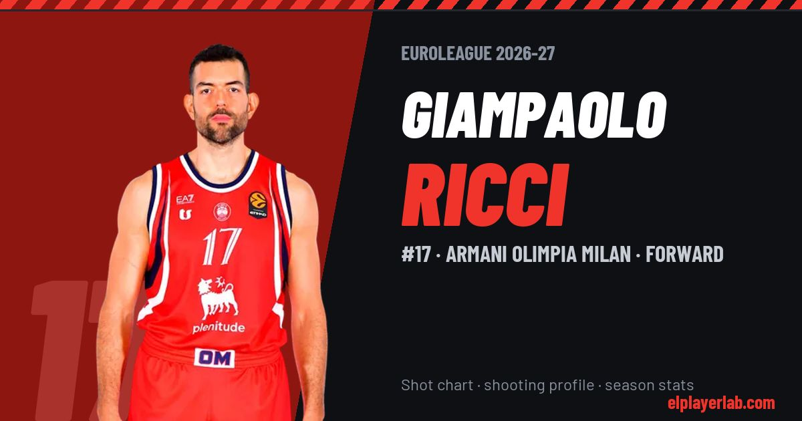

Armani Olimpia Milan · Euroleague 2026-27
Giampaolo Ricci
#17 · Forward · Armani Olimpia Milan · 2026-27 · 1 games · 3.0 pts · 2.0 reb · 0.0 ast a game

- Number
- 17
- Position
- Forward
- Height
- 201 cm
- Weight
- 102 kg
- Born
- 1991-09-27
- Country
- Italy
Career
- Milan 2021-2027
- Virtus Bologna 2019-2021
- Vanoli Cremona 2017-2019
- Basket Tortona 2016-2017
- Scaligera Basket Verona 2015-2016
- Assigeco Casalpusterlengo 2011-2015
- Stella Azzurra Roma 2009-2011
- Basket Chieti 2007-2009
Euroleague Player Lab: shot charts, shooting profiles and season stats for every player, rebuilt after every game.